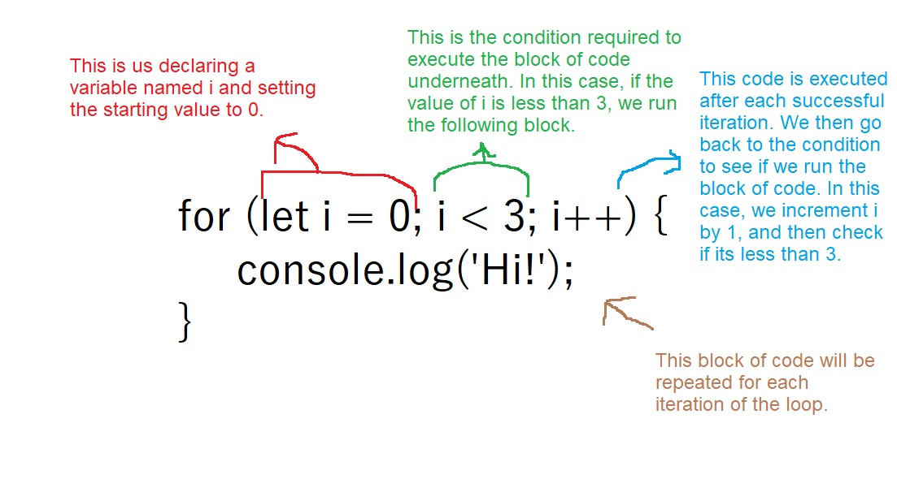

For loops are one of the more difficult concepts to grasp at first but the are also extremely powerful. This lesson will explain how the loop works and pratical applications of it.
For loops are generally used to repeat a block of code as many times as you need it to. Most commonly, it is used to perform operations over an array, but there are plenty of other uses for it as well. Lets take a look at a most basic example of a for loop and examine its parts.
Let's go over the flow of this particular loop.
The first thing that happens in this loop is the declaration of a new variable. We are setting the name of the variable to i.
That doesn't seem like a good name for a variable.
Well hello there. You are correct, this is not a good name for a variable. Naming the trigger variable in a for loop i goes back a long ways, but I highly encourage you to use an actual word that is more descriptive of what the variable is going to represent. This will make more sense when we go over looping arrays.
Going back to our loop, you will see that we are defining it to start with a value of 0. This variable can only be used inside the block of code that belongs to the for loop. So the value of i is now 0. Cool. Now what?
Now we move on to the next part of the for loop, the condition. This is represented by something (usually a mathematical expression, but not always), that returns a boolean value: true or false. This is super important because if the value is true, the block of code will be executed. If the value is false, the loop will terminate.
In our case, i is equal to 0, so is i less than 3? It sure is, so we will execute the block of code underneath, which console logs 'Hi!'. So far, so good.
The last part is code that is executed after a successful loop. This should almost always modify the value of the variable that is used as the condition. In our case, after that first console log, we see i++ which is the shortcut to increment the variable, aka increase the value by 1. Since we started off with the value as 0, we executed the block which spit out a console, and now we increased the value to 1.
Now that the value of i is 1, we go back to our condition statement, which is i < 3. Well, 1 is less than three, so we will execute the block of code again giving us a second console log. With that done we hit the modifier again which changes the value of i to 2. 2 is still less than 3, so we run our block a third time and get a third console log.
Then we go back to the modifier and now the value is 3. What does 3 < 3 resolve to? Now, it's false. Since the condition is now false, the loop terminates, and we are left with three console logs.
Take a minute to wrap your head around the concept of the flow here: We declare and define a variable, check it against a condition, if its true, run some code, modify the variable, and hit the condition. We repeat the process of modifying and hitting the condition over and over until the condition becomes false.
Take a look at the following loop:
for (let i = 0; i > 5; i++) {
console.log('All I want is to be in the console...');
}
What seems to be the problem here? Let's go over it step by step:
First we set the value of i to 0. Seems harmless enough.
Now we go to the condition. Is i greater than 5? Nope, it sure isn't. This means that we failed the condition on the first try and the poor console log underneath never sees the light of day as the loop is terminated immediately. This is the first common mistake with for loops: We set a condition that is not true to begin with and our code doesn't execute.
Yes, the opposite of the above is not only an actual scenario, but can happen quite often and used to be my specialty. Let's take a look at one example here.
for (let i = 0; i >= 0; i++) {
console.log('Now this is too much!');
}
Let's check out this doozy. We start with i once again starting at 0. The condition asks if i is greater than or equal to 0. Thats true, so lets run our console log. Now we hit the modifier that increments our variable and go back to the condition.
But wait, since we're always incrementing the variable, i will now ALWAYS be greater than or equal to zero. The means our loop will never terminate. Sadly, we can not have a future Arnold Schwarzenegger save us here, your browser will literally run this loop forever. This will likely crash your browser. Bummer.
Does the modifier always have to increment? Can we go backwards too?
You can set the modifier to do pretty much whatever you want it to do. So the following is perfectly valid:
for (let i = 5; i > 0; i--) {
console.log('I should appear five times.');
}
It is highly recommended that you stick to simply incrementing or decrementing as anything more complicated because very problem prone.
Thus far we've only seen our variable i inside the parentheses and act as a behind the curtain wizard controlling our looping process. But you can use that variable inside the curly brackets as well. In fact, you will use the value in some way in almost all of the loops your create. Let's create another example.
for (let number = 0; number < 5; number++) {
console.log(`The value of number is ${number}`);
}
This should help illustrate our flow a little better. Firstly, we changed the variable name from that ghastly i to number. We start at 0. The condition is true so the block of code is run with the value of number being 0. We hit the modifier which increments number, so it's now 1. The condition is still true, so now the console log runs with the value of number being 1. This condition all the way until the value of number reaches 5 at which point the loop terminates.
Thus far we've just been writing static loops; we're hard-coding the values. The best part about loops is when you utilize the other values to loop over items dynamically. This is best demonstrated with the most common example of loops: Looping through an array.
Let's create an array of 5 colors and see if we can console log each individual color with a for loop.
let colors = ['orange', 'yellow', 'purple', 'pink', 'blue'];
Before we start to construct our loop, lets think about our goal first. If we were to not use a loop and manually log them ourselves, how would we do it? It would look something like this:
let colors = ['orange', 'yellow', 'purple', 'pink', 'blue'];
console.log(colors[0]);
console.log(colors[1]);
console.log(colors[2]);
console.log(colors[3]);
console.log(colors[4]);
We are starting at index 0, and going to index 4. Hopefully you can start to see how we would construct this, but let's go step by step. We know where our starting point will be, because the starting index for every array is the same: 0.
let colors = ['orange', 'yellow', 'purple', 'pink', 'blue'];
for (let index = 0; ; ) {}
Note that I decided to name our variable index because its fairly representative of what we are going to use it as: the index of our colors array. There's one other easy part we can fill in, the modifier. We know our index is going to go up by one, so our modifier should be simple: index++.
let colors = ['orange', 'yellow', 'purple', 'pink', 'blue'];
for (let index = 0; ; index++ ) {}
Now the tricky part, what should our condition be? Sure, if we wanted to hard code the value, we can simply put in index < 5. But what if our array changes. What if it has two items, and not 5. What if it has 10 items? What we need is a value where we can find the total number items in an array. Do you know how to find it? That would be .length, and we can use it here to great effect:
let colors = ['orange', 'yellow', 'purple', 'pink', 'blue'];
for (let index = 0; index < colors.length; index++ ) {}
A-ha! Now we know that if our index ever reaches our arrays length, our loop will stop. If we have 5 items, our loop will start at 0, and as soon as it hits the value of the length, 5, it ceases to be less than that value and the loop stops.
Now for the finishing touch. We need to actually do a console log. This should be easy, we just need to log the colors with the appropriate index. Hopefully typing this out manuall gave you an idea of how we would do this:
let colors = ['orange', 'yellow', 'purple', 'pink', 'blue'];
for (let index = 0; index < colors.length; index++ ) {
console.log(colors[index]);
}
Is this why you start all your loops at 0? Because I don't know about you, but when I count, I start at 1.
That's great, you may start at 1, but computers sure don't. Because of this, it is considered best practice to always start your loops at 0 unless you absolutely have to.